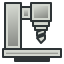

Machine

- Menu location
-
; New Machine on the Output tab of the Job task panel
- Workbenches
- Default shortcut
-
None
- Introduced in version
-
26.3
- See also
-
Job, Post Process, Machine Configuration, Postprocessor Customization
Description
A Machine describes a CNC machine: its axes and their limits, its Toolheads, its kinematics, and the machine-based Post-Processor with that post’s settings. introduced in 26.3: a Machine is stored as a .fcm file in the Machines folder of the CAM asset directory. Assigning a Machine to a Job switches the Job to machine-based post-processing. The Machine Editor creates and edits Machines, builds a Machine from an MTConnect agent, and checks a definition before it is saved. The Machine Configuration page covers the file format and Job integration in full. Writing a Machine-Based Post-Processor covers posts written for this system.
Usage
Creating or editing a Machine:
-
Open the Machine Editor.
-
: select a Machine in the Machines list and press Edit, or press Add for a new Machine.
-
New Machine on the Output tab of the Job task panel.
-
Import… in the Machines group, to build a new Machine from an MTConnect agent (see below).
-
-
Fill in the Machine, Toolheads, Postprocessor and Options tabs, described under Options. Edit as Text switches the editor to a JSON text view of the whole file and back.
-
Press Validate to check the Machine for problems that would stop it loading or would silently drop settings. A Validation dialog reports "No problems found." or the number of errors and warnings, with each finding in its details.
-
Press Save to write the
.fcmfile. Close discards the changes. -
On the Output tab of the Job task panel, select the Machine in the Machine list. The entry "(Legacy post-processor)" leaves the Job without a Machine. While a Machine is selected, the Processor and Arguments rows are hidden, because the Machine carries the Post-Processor and its settings.
-
Run Post Process. The Post-Processing Dialog uses the Machine’s Post-Processor and options and runs the Machine’s Sanity Check contributions.
Importing a Machine from MTConnect:
-
Press Import… in the Machines group of . The Import Machine from MTConnect dialog opens.
-
Enter the URL of the machine’s MTConnect agent, for example
machine:5000/probe, or use the folder button to select a saved probe XML file. A URL without a path gets/probeappended. OnlyhttpandhttpsURLs are accepted. -
Press Import. When the agent describes several machines, a Select Device dialog asks which one to import.
-
Read the Machine Imported summary. It lists what was imported, what was assumed and needs review, and what was not imported.
-
The Machine Editor opens with the imported Machine, not yet saved. Review the assumptions, then press Save.
The import reads the standard MTConnect device model and ignores vendor extension elements. It populates the linear axes with their travel limits and velocities, and the rotary axes with their angle limits. The spindle’s rpm range becomes a rotary Toolhead, with coolant flood and mist set from the probe’s coolant components. A probe whose travel specifications are in inches gives an imperial Machine. The probe does not say whether a rotary axis moves the table or the Toolhead. The import gives an A/C or A/B pair the table_rotary role, a B/C pair the head_rotary role, and a single rotary axis the table_rotary role. Each assumption is recorded in the Machine’s Kinematics Notes for review.
Options
The Machine Editor has four tabs. The Postprocessor and Options tabs are hidden when the parameter Mod/CAM/EnableMachinePostprocessor is false.
Machine tab
-
Name, Manufacturer, Description.
-
Template: load settings from a machine type, from one of your saved Machines, or from a built-in or add-on Machine Template.
-
Units: Metric or Imperial for the values entered.
-
Type: the axis set of the Machine. Values:
-
Custom Machine -
2-Axis Lathe (X, Z) -
3-Axis Mill (XYZ) -
4-Axis Mill (XYZ + A)and4-Axis Mill (XYZ + B) -
5-Axis Mill (XYZ + A, C)and5-Axis Mill (XYZ + B, C)
-
-
Kinematics group:
-
TCP Supported: checkbox.
-
Rotation Strategy: how the control runs an Operation on a tilted Work Plane. Values
Not declared,Dynamic work offset (DWO),Tilted work plane (TWP),Post transform (not available yet). DefaultNot declared. With DWO the post commands the rotary axes and the control applies its pivot offsets. With TWP the post declares the plane and the control positions the rotary axes. The command the plane is declared with comes from the Post-Processor, not from the Machine. A Machine with rotary axes and no strategy cannot post an Operation on a tilted Work Plane. -
Kinematics Notes: free text. The MTConnect import writes its assumptions here.
-
-
Axes: one group per axis. A linear axis has Role (
table_linear,head_linear), Parent, Sequence, Direction, Min Limit, Max Limit, Max Velocity and Joint Origin. A rotary axis has Role (table_rotary,head_rotary), Parent, Sequence, Rotation Axis, limits, velocity, Joint Origin, Solution Preference (shortest, positive, negative), Allow Flip and Wrap Strategy (unwound, modulo, rezero).
Toolheads tab
-
Add Toolhead adds a Toolhead. Each Toolhead has its own tab, removed with the tab’s close button.
-
Toolhead type:
Rotary,Laser,Waterjet,PlasmaorWire EDM. -
Fields: min and max rpm, power, tool change mode, coolant flood and mist, coolant delay, toolhead wait.
-
The min and max rpm of a rotary Toolhead are the limits the Sanity Check compares commanded spindle speeds against. A value of 0 means not specified. The limits apply only when the Machine has exactly one Toolhead and that Toolhead is rotary.
Postprocessor tab
-
The Post-Processor list: one of the machine-based Post-Processors on the post search path, for example
centroid,fanuc,generic,grbl,heidenhain,linuxcnc,mach3_mach4,marlin,opensbp,smoothieor an add-on post. -
The property group below it: the Post-Processor Properties of the selected post whose Property Scope is Machine or Job. Machine-scope properties are edited here only. Job-scope properties, such as Allow tool-change and LinuxCNC’s blend mode and blend tolerance, get their default here and can be overridden for one run on the Options tab of the Post-Processing Dialog. Run-scope properties, such as Show Pre-processing Dialogs, never appear in the editor. The properties common to every machine-based post are listed under Properties. See Postprocessor Customization for post-specific entries.
Options tab
-
Output Units: the unit command written to the output.
-
Output Header and Header Options: Include Date, Description, Document Name, Machine Name, Project File, Units, Tool List, Fixture List.
-
Comment Options: whether comments are written, the comment symbol, Operation labels, empty lines between sections, and bCNC comments.
-
Formatting Options: Line Numbers, Line Number Start, Prefix, Increment, Command Space, End of Line Chars.
-
Precision Options: Axis, Feed, Toolhead.
-
Duplicate Output Options: Duplicate Commands, Duplicate Parameters. Unchecked means modal suppression.
-
Processing options: Early tool prep, Filter inefficient moves, Split Arcs, Tool change, Translate Drill Cycles, Translate Rapid Moves, XY before Z after tool change, and Return to. Output Tool Length Offset and Enable Remote Posting are on the same tab.
Properties
The Job carries two properties for its Machine.
-
Machine: the display name of the Machine. Empty means legacy post-processing. The
.fcmfile is looked up by name, case-insensitive. -
The Job’s overrides of Job-scope Post-Processor Properties, stored in
PostProcessorPropertyOverridesand written by the Post-Processing Dialog.
The Post-Processor Properties below are common to every machine-based post and are stored by name in the Machine’s postprocessor_properties. All are Machine scope unless stated.
-
File Extension: extension of the output file, without the dot. Default
nc. -
Tool Radius Compensation (G41/G42): the post may output G41/G42 radius compensation codes. Default unchecked.
-
Supported G-code Commands: one command per line. Commands not in the list are filtered out or cause warnings. Default: the commands accepted by every machine-based post.
-
Ignore G-code Commands: one command per line, tolerated but filtered out of the output. Default empty.
-
Drill Cycles to Translate: drill cycles expanded to G0 and G1 moves, one per line. Default
G73,G81,G82,G83,G85. Leave empty when the control runs drill cycles natively. -
Generated Parameter Order for GCode: the order of the words on each output line. Default
XYZABCUVWFSIJKTQRPDHL.
Each block is G-code text inserted as written. Every block defaults to empty.
-
Preamble: at the start of the program, after the header.
-
Postamble: at the end of the program.
-
Safety Block: commands that reset the machine to a known safe condition, for example G40, G49, G80.
-
Pre-Job and Post-Job: before and after each Job.
-
Pre-Fixture and Post-Fixture: before and after a Fixture change. A Fixture is a G54 to G59.9 selection, not the workholding.
-
Pre-Operation and Post-Operation: before and after each Operation.
-
Pre-Tool Change: before a tool change.
-
Post-Tool Change: immediately after the tool change (M6), before G43 and before the spindle is turned on. Use it for a custom tool length offset routine, custom radius compensation, or a return motion before the spindle starts. The block is not emitted when Allow tool-change is unchecked, because no M6 is written.
-
Tool Return after tool changes: immediately after the spindle is turned on after a tool change. The block is emitted even when M6 is suppressed.
-
Pre-Rotary Move: before the rotary axes move, and before a tilted Work Plane is declared when the control positions the axes itself. Put the moves that bring the Tool Bit clear of the Model here, in machine coordinates, for example
G53 G0 Z0. An Operation’s clearance height is measured in its own Work Plane and says nothing about the Tool Bit’s position while the table turns. The Sanity Check warns when the rotary axes move between Operations and this block is empty. -
Post-Rotary Move: after the rotary axes have moved, and after a tilted Work Plane has been declared and aligned to.
These properties apply when the Machine’s Rotation Strategy is TWP.
-
Tilted work plane: control positions the rotaries: the plane command positions the rotary axes itself (G53.1, TURN). Unchecked, the program commands them with a rotary move before declaring the plane. Default checked.
-
Tilted work plane: declare: the line that declares a tilted Work Plane, with
{x} {y} {z}the plane’s origin and{a1} {a2} {a3}the plane command’s angles. Empty uses the plane command’s own form. Default empty. -
Tilted work plane: align: the line that points the Tool Axis along a declared plane when the control positions the rotary axes itself. Empty uses the plane command’s own form. Default empty.
-
Tilted work plane: cancel: the line that cancels a declared plane. Empty uses the plane command’s own form. Default empty.
-
TLO after tool-change: output G43 after a tool change. Unchecked, existing G43 commands are replaced by a comment. Default checked.
-
Allow tool-change: Job scope. Unchecked suppresses M6. Default checked.
-
Axis precision in output: decimals for axis motion. Rotary axis angles use the same precision and are never converted between millimetres and inches. Default 2.
-
feed_precision: decimals for the F word, which carries Horizontal Feed and Vertical Feed. Default 3. -
Spindle-speed precision in output: decimals for the S word. Default 1.
-
Output F parameter for G0 (rapid): write the F word on rapid moves. Default unchecked.
-
translate_no_engagement_feed: G0 moves that an Operation marks with a no-engagement feed become G1 moves at that feed. Default unchecked.
Notes and limitations
A Machine is a JSON file named after the Machine, with spaces replaced by underscores, in <asset path>/Machines. Its top-level keys are freecad_version, version, machine (name, manufacturer, description, units, kinematics, axes, toolheads), postprocessor (file_name, properties), output (units, output_tool_length_offset, remote_post, header, comments, formatting, precision, duplicates) and processing. The kinematics section carries rotation_strategy with one of none, dwo, twp or post_transform. A file written before that key existed is read through its dwo_supported flag. A Toolhead’s toolhead_type is one of rotary, laser, waterjet, plasma or wire_edm.
The checks behind Validate also run from the command line:
FreeCADCmd path/to/Mod/CAM/Machine/models/validate.py --pass MACHINES_DIR--pass is required, because FreeCAD otherwise treats trailing arguments as documents to open. Findings have three severities.
-
ERROR: the definition will not load, or loads into something unusable. Causes are invalid JSON, an unknown Toolhead type, a broken kinematic chain, a Post-Processor that cannot be found, inverted axis limits, or a display name shared with another file. -
WARNING: data in the file that the loader does not read, Post-Processor Properties the post does not declare, or a Machine without Toolheads. -
INFO: fields the model has gained since the file was written.
The options --strict, --json, --verbose and --no-postprocessor-check change the exit code, the output format, the detail level and the post lookup. In the editor the dropped-data comparison runs only in the text view, where a document exists to compare against.
The Template list offers the machine types above, your saved Machines, and Machine Templates from add-ons. Any installed add-on whose package.xml declares a machine content item, for example the FreeCAD/Machines add-on from the Addon Manager, contributes the .fcm files of its machines/ folder as read-only templates grouped by add-on name. Selecting one copies it into your own Machine, so later add-on updates do not change your Machine. Add-ons can likewise ship Post-Processors in a posts/ folder. A file named ADDON_DISABLED in an add-on folder, or ALL_ADDONS_DISABLED in the Mod folder, hides them.
An Operation on a tilted Work Plane needs a Machine with rotary axes, a Rotation Strategy of DWO or TWP, and a Post-Processor that can emit that strategy. Otherwise the export refuses the Operation and names the Operation, the Machine and the missing piece. A Work Plane the Machine cannot index to is refused with the plane’s name and the Machine’s rotary limits. A legacy Post-Processor refuses every Operation on a tilted Work Plane. A Work Plane parallel to the table posts on any Machine. Changing the Machine changes the output on the next export; the Operations are not recomputed.
The Sanity Check compares every spindle speed commanded by M3 or M4 against the rotary Toolhead’s min and max rpm and emits a WARNING Squawk for each speed outside the range. A Machine with several Toolheads gets a NOTE Squawk saying the speeds were not checked, because the model does not mark one Toolhead as active.
The Assets preference page marks Machines as an experimental feature. A Machine assigned to a Job does affect post-processing.
Scripting
from Machine.models.machine import MachineFactory, Machine, RotationStrategy
from Machine.models.validate import validate_file
m = Machine.create_3axis_config()
m.name = 'My Router'
m.postprocessor_file_name = 'grbl'
m.kinematics.rotation_strategy = RotationStrategy.NONE
MachineFactory.save_configuration(m)
for finding in validate_file(MachineFactory.get_config_directory() / 'My_Router.fcm'):
print(finding)
# job is an existing CAM Job object
job.Machine = 'My Router'A Machine can be built from a saved MTConnect probe document without the dialog:
from Machine.models.mtconnect_import import machine_from_probe
with open('probe.xml', encoding='utf-8') as f:
machine, report = machine_from_probe(f.read(), source='probe.xml')
print(report.summary())